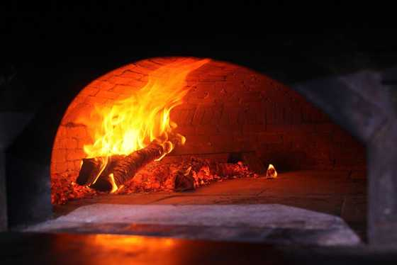
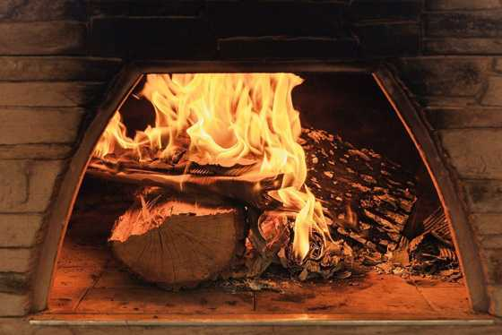
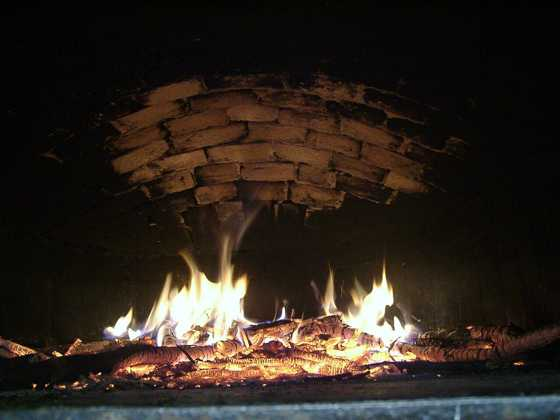
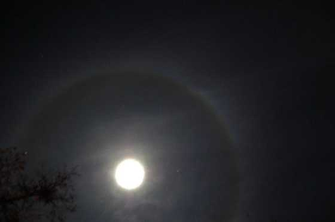
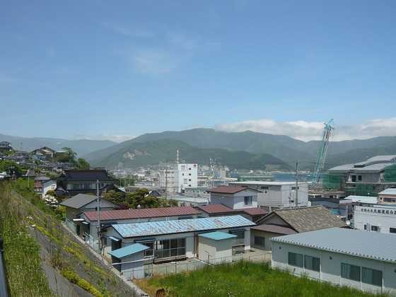
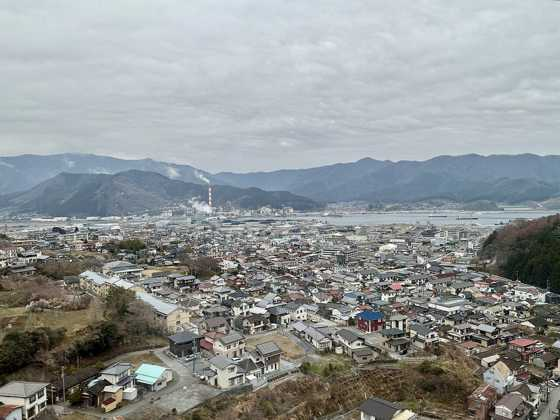
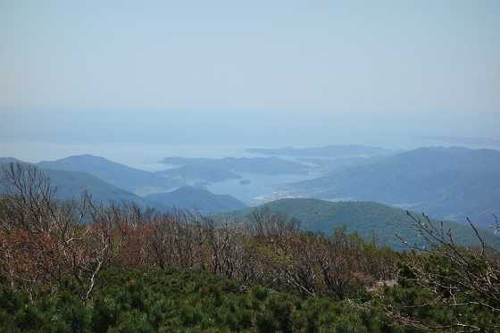
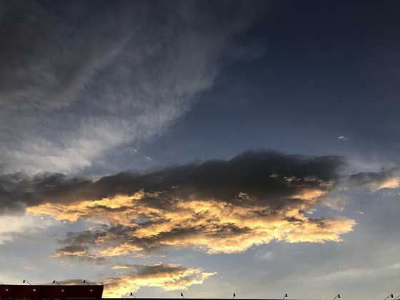
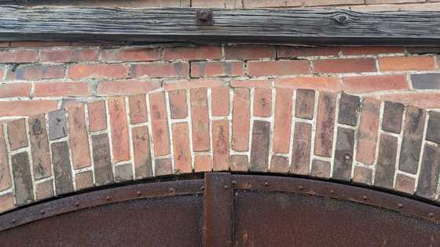

岩手県大船渡市赤崎町 ・ PIZZA
魔女の窯
ひっそりと灯る窯の前で、魔女がひとり、ピザを焼く。
お店のこと
ひとりの魔女が営む、ひっそりとしたピザ屋さん。
魔女の窯は、岩手県大船渡市で営業しているピザ屋さんです。Instagramのプロフィールでは「大船渡でひっそり営業しているピザ屋さんです。店主は魔女が1人で切り盛りしています」と紹介されています。お休みの日は、Instagramのハイライト「予定表」(カレンダー)で確認するよう案内されています。
店名の意味や、お店を始めたきっかけは確認できていないため掲載していません。このページの見出しや語り口は、上記の紹介文から着想した制作側の表現です。



掲載の写真はフリー素材のイメージで、店舗の実際の様子・実際の窯・料理ではありません。
口コミ
こんな声が聞こえてきそうです。
イメージ例
「ひっそりした雰囲気がいい。焼きたてのピザを受け取って、帰り道の海を眺めながら食べました。」
イメージ例
「お休みの日はInstagramで確認してから行きます。たどり着けた日は、ちょっと得した気分。」
イメージ例
「ひとりで切り盛りしているからか、手作りのあたたかさがありました。また行きたいです。」
上の口コミは制作側が作成したイメージ例であり、実在のお客様の声ではありません。
アクセス
三陸の海辺、赤崎町で。
| 所在地 | 岩手県大船渡市赤崎町諏訪前39-20 |
|---|---|
| 電話 | 準備中 |
| 営業時間 | 準備中 |
| 定休日 | 準備中(Instagram「予定表」をご確認ください) |
| SNS | Instagram @majo_kama1017 |





写真クレジット
写真について
掲載写真はすべてフリー素材(Wikimedia Commons等)で、お店の実際の様子ではありません。
- fire.jpg: Wood Fired Oven(提供表記 oakwoodfirepizza.com) / CC BY-SA 4.0 / 出典 / 撮影地不明
- oven-flame.jpg: Brick-oven-thumbnail / Beboplu / CC0 1.0 / 出典 / 撮影地不明
- oven-bake.jpg: Baking Bread 001 / George M. Groutas / CC BY 2.0 / 出典 / 北キプロス(2007年)
- brick.jpg: Bread oven bricks start to whiten / Vinny Burgoo / CC BY-SA 3.0 / 出典 / 撮影地不明
- tomato.jpg: Pasta Sauce Ingredients (Unsplash) / Geo Darwin / CC0 1.0 / 出典 / 撮影地不明
- tomatoes.jpg: Tomatoes for sale / Jeffery Martin / CC0 / 出典 / 米国
- herbs.jpg: Fresh Herbs (Unsplash) / Thomas Rehehäuser / CC0 1.0 / 出典 / 撮影地不明
- arch.jpg: Hakodate dock red brick warehouse arch / Shioyama / CC0 / 出典 / 北海道函館市
- moon.jpg: Ring Around the Moon / santafeegret / CC BY 2.0 / 出典 / 撮影地不明
- ofunato-port.jpg: Port ofunato 20130601 / Opqr / CC BY-SA 4.0 / 出典 / 岩手県大船渡市
- ofunato-city.jpg: Cityscape of Ofunato City, 2026 / 石巻敎祖 / CC BY-SA 4.0 / 出典 / 岩手県大船渡市
- ofunato-goyo.jpg: 五葉山からの大船渡 / Koda6029 / CC BY-SA 4.0 / 出典 / 岩手県
- dusk.jpg: Clouds and sky at dusk 20170805 / そらみみ / CC BY-SA 4.0 / 出典 / 撮影地不明